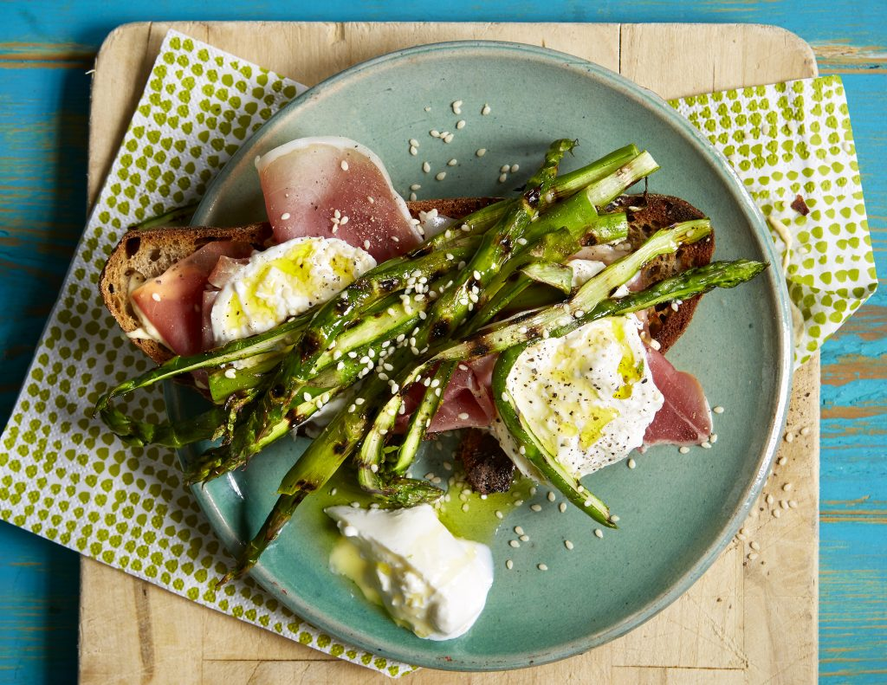

APRIL

May is the month when seasonal food gets really colourful, with peas, carrots and cherries coming into season, along with aubergines and rocket. The first of the new potatoes arrive, sardines and pollock are available too.
Fruit
Apricots
Cherries (coming into season)
Vegetables
Cauliflower (end of season)
Peppers
Rhubarb
Meat
Turkey (still available)
Fish and seafood
Salmon
Tuna (coming into season)